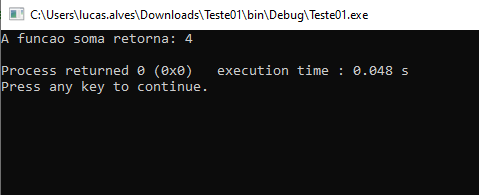

Funções
Na programação de baixo nível, o termo "função" muitas vezes se refere a um bloco de código que realiza uma tarefa específica e que pode ser chamado (invocado) de diferentes partes do programa. No contexto da programação de baixo nível, como em linguagens assembly ou mesmo em linguagens mais próximas do hardware, como C e C++, a implementação de funções pode ser mais direta e menos abstrata do que em linguagens de alto nível. Em linguagens de baixo nível e médio nível, uma função geralmente é definida por um endereço de memória e um conjunto de instruções específicas que são executadas quando a função é chamada. As funções podem receber parâmetros, que são valores passados para a função, e podem retornar um valor para o ponto de chamada.
Mais importante do que saber montar um função em C++ ou qualquer outra linguagem de programação.
è conhecer o ciclo de uma função em um programa.
Quando você chama uma função em um programa, vários eventos ocorrem em sequência. Vamos entender o
processo passo a passo:
1 Chamada da Função (Invocação):
No código do programa, você faz uma chamada para a função, especificando o seu nome e, se necessário, passando argumentos.
2 Transferência de Controle para a Função:
A execução do programa é transferida para o início da função chamada. O controle agora está dentro da função.
3 Execução do Código da Função:
O código dentro da função é executado. Isso inclui a execução das instruções e o processamento dos argumentos, se houver.
4 Retorno de Valor (Opcional):
Se a função tiver um valor de retorno, ela pode calcular esse valor e retorná-lo à parte do programa que fez a chamada. O valor retornado pode ser usado em expressões ou atribuído a uma variável.
5 Transferência de Controle de Volta:
O controle é transferido de volta para o ponto no programa de onde a função foi chamada. A execução continua a partir desse ponto.
6 Finalização da Função:
Se necessário, há uma limpeza interna da função. Isso pode incluir a liberação de recursos alocados, como memória dinâmica, e a remoção de variáveis locais da pilha de execução.
Essa sequência descreve o ciclo típico de uma chamada de função. Cada função encapsula uma tarefa específica, e sua chamada permite que essa tarefa seja executada sem a necessidade de repetir o código em diferentes partes do programa. O uso de funções melhora a modularidade, a legibilidade e a reusabilidade do código.
Sintaxe de uma função
<tipo de retorno> <nome da funçao>()
{
..instrução a ser executado
}
Exemplos de uso de uma função.
Há dois uso bastante comum de uma função. Quando precisa que a função retorna algum valor ou que não retorna valor algum que é no caso, apenas mostrar algum valor no console. Mais a diante veremos que o tipo void é muito usado quando está trabalhando com ponteiros. Void pode não retornar nenhum valor, mas, pode ser usada para modificar valores diretamente nos endereços de memória.
O exemplo abaixo, mostra uma prática comum do uso de uma função.
1 #include <iostream>
2 using namespace std;
3 //=======================
4 //-Protótipo de funções-
5 int soma(int, int);
6 int main()
7 {
8 cout <<"A funcao soma retorna: " <<soma()<<endl;
9 return 0;
10 }
11 //=======================
12 //-Desenvolvimento de funções-
13 int soma(int A, int B)
14 {
15 return A+B;
16 }

Função retorna 4
vamos analizar o programa a cima. È um programa simples, mas que podemos aprender muito de sintaxe pra não gerar dúvidas na hora de sair programando programas mais complexos, afinal você não vai querer ficar cosultando toda hora como se faz.
Na linha 1, temos a inclusão da lib padrão do C++ #include <iostream>, na linha 2 temos a definição do uso de todas as funçoes que fazem parte da lib padrão, sem precisar ficar chamando elas individualmente.
A linha 5, tem o que chamamos de protótipo de funções, È de boa prática que definimos a protótipo acima do int main() quando não for trabalhar com arquivos header(veremos mais adiante). Definimos o corpo da função abaixo do int main(). No protótipo da função, é opcional declarar a variavel de argumento, mas seu tipo é imprescindível.
Feito isso, podemos usar a(s) do modo que nos convém. No caso didático que descrevi, estou invocando o resultado da função no mesmo endereço em que ela está sendo chamada. Ou seja, imagina que num espaço físico de memoria é criada a função soma e o resultado é colocado na mesma região, como é demostrado na linha 8.
O cout é o operador de fluxo de saída, usado para mostrar no console as informações, como mostra a figura acima desse texto. Para finalizar o entendimento de funções, só vale mencionar, quando for usar o valor que a função retorna, atribuie o valor a uma variável auxiliar para carregar ela em qualquer parte do programa, ou passar ela para para outra função.